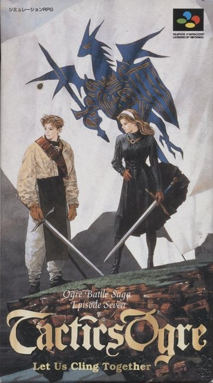

【衝撃】一見さんの10人に10人が読み間違える名前に驚きの由来！？
この記事をご覧になっている皆さま、友達にあだ名をつけられたことはありますか？
私は中学校2年のある時期、「被告」と呼ばれていたことが最初で最後の思い出です。
というのも、すでにお察しの方もいると思いますが
これは私に友人が少なかった訳ではなく、
私に友人がいなかった訳でもなく（重要）
仲の良い友人がみんな私のことを下の名前で読んでいたからです。
そんな風に長年に渡り私の「あだ名つけられたい欲」を育ててきた
私のこの下の名前ですが、実は驚きの由来がありました。
それはやはり・・・
ではなく

これです。
画像のゲームソフトは『タクティクスオウガ』(Tactics Ogre: Let Us Cling Together) 。
1995年10月6日に株式会社クエストから発売されたスーパーファミコン用シミュレーションRPGです。
ただし、このゲームでの「オウガ」は敵方のキャラであり、
流石に気が引けた父は真ん中の文字を「ウ」から「オ」にしたそうです。（違う、そうじゃない。）